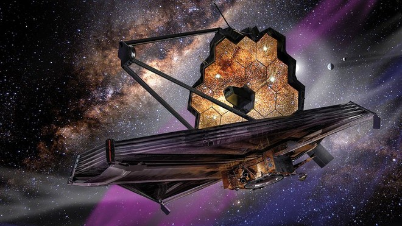
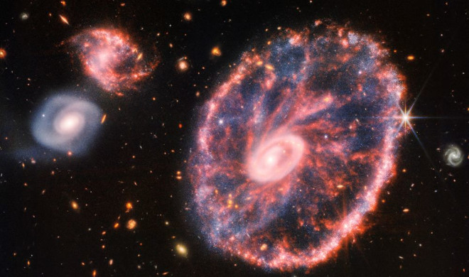
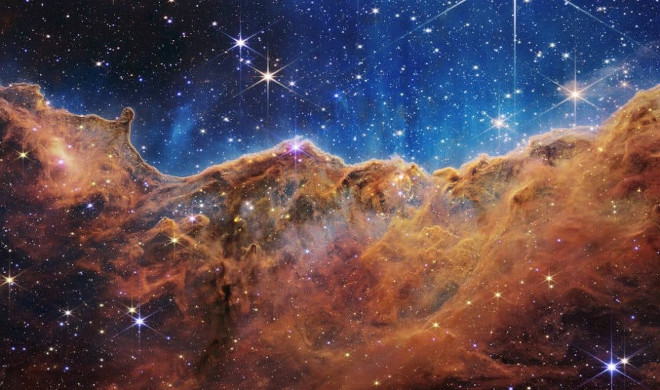

O que é o telescópio James Webb?
O Telescópio James Webb é um observatório espacial infravermelho lançado em 25 de dezembro de 2021, na Guiana Francesa, a bordo do foguete espacial Ariane 5. Esse telescópio de US$ 10 bilhões é o maior e mais poderoso telescópio espacial da NASA, e vai sondar o cosmos em busca de coletar a história do universo, desde o Big Bang até a formação de planetas e além.
Por que ele é revolucionário?
Objetos distantes têm a sua luz convertida para o tom vermelho; se estiverem extremamente distantes, sua emissão se torna infravermelha. O James Webb consegue observar essa luz infravermelha de forma inédita, o que possibilita enxergar formações espaciais mais antigas. “Isso pode revolucionar o nosso conhecimento de como as galáxias são formadas”, afirma Jorge Meléndez, professor do Departamento de Astronomia da Universidade de São Paulo (USP). o telescópio vai trazer enormes avanços. Ele vai permitir observar os primeiros objetos formados no Universo, vislumbrar estrelas formando-se dentro de nebulosas gasosas e caracterizar a atmosfera de exoplanetas, planetas fora do Sistema Solar.
O lançamento (designado "Ariane flight VA256") ocorreu no dia 25 de dezembro de 2021, em um foguete Ariane 5 no Centro Espacial de Kourou, na Guiana Francesa. Após o sucesso do lançamento, o administrador da NASA, Bill Nelson, afirmou que este é "um grande dia para o planeta Terra".
Imagens impressionantes

Recentemente, Webb direcionou a mira para o caos da Galáxia Cartwheel, revelando novos detalhes sobre a formação de suas estrelas e de seu buraco negro central. Localizada a cerca de 500 milhões de anos-luz de distância da Terra, na constelação do Escultor, essa galáxia é extremamente rara de se observar – mais uma demonstração do potencial do telescópio.
Talvez a imagem mais bonita capturada seja a dos "Penhascos Cósmicos" da nebulosa de Carina, um berçário estelar. Aqui, Webb revelou pela primeira vez regiões de formação estelar anteriormente invisíveis. Com essa imagem, será possível entender por que as estrelas de uma certa massa surgem e o que determina o número de formações em uma determinada região, além de ser o material das estrelas, o material nebular também pode ser a nossa origem. "Esta pode ser a maneira como o universo transporta carbono, o carbono do qual somos feitos, para planetas que podem ser habitáveis para a vida".
Então é isso! Espero que você tenha gostado do nosso artigo com essas curiosidades sobre o telescópio.